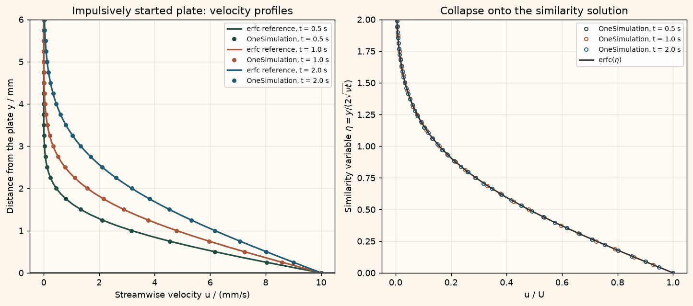

Docs › Examples › Stokes' first problem
Fluid flow · 3D
Stokes' first problem
A plate set impulsively in motion drags the fluid above it, graded against the error-function solution.

What it computes
OneSimulation integrates the transient incompressible Navier-Stokes equations above a suddenly moving wall with periodic side faces.
What it checks
The velocity profile matches u = U erfc(y/(2 sqrt(nu t))) within about 0.1 % of U at several times.
The notebook
The complete notebook, cell by cell. Run it to produce the figures and the comparison printout.
A viscous fluid is at rest above a flat plate. At \(t=0\) the plate is suddenly set into motion in its own plane at constant speed \(U\) and keeps that speed. Momentum diffuses away from the plate into the fluid; the flow stays unidirectional, \(u=u(y,t)\), and the Navier-Stokes momentum balance reduces to the diffusion equation
with the kinematic viscosity \(\nu=\mu/\rho\).
OneSimulation integrates the full 3D time-dependent Navier-Stokes system \(\rho(\partial_t u+(u\cdot\nabla)u)=-\nabla p+\mu\nabla^2 u\), \(\nabla\cdot u=0\) with inf-sup stable Taylor-Hood finite elements (quadratic velocity, linear pressure), a second-order BDF time integrator and a Newton solver per time step.
Reference. The problem has no intrinsic length scale, so the solution is self-similar in \(\eta=y/(2\sqrt{\nu t})\):
The momentum "boundary layer" grows like \(\sqrt{\nu t}\) without bound. We check the computed profiles at several times against this formula, confirm that they collapse onto one curve in \(\eta\), and confirm that the distant wall is still at rest.
from importlib.metadata import version
import numpy as np
import matplotlib.pyplot as plt
from scipy.special import erfc
from onesim.cad.d3 import Box
from onesim.materials import NewtonianFluid
from onesim.meshing import PeriodicPair, StructuredTetrahedralMesher
from onesim.numerics import Numerics
from onesim.numerics.fem import FiniteElement, TaylorHood
from onesim.numerics.linear import SparseDirect
from onesim.numerics.nonlinear import Newton
from onesim.numerics.time import BDF, BackwardEuler
from onesim.physics.hydrodynamics import FixedVelocity, IncompressibleNavierStokes, NoSlipWall
from onesim.simulation import Problem, Simulation
from onesim.simulation.field_constraints import MeanValue
from onesim.simulation.initial_conditions.values import InitialValue
from onesim.simulation.problem_definition.boundaries import PeriodicBoundary
print("OneSimulation:", version("onesimulation"))Parameters
Water above a plate that starts moving at 10 mm/s. Over the two seconds of the simulation the diffusion length \(2\sqrt{\nu t}\) reaches 2.8 mm, so a 10 mm layer keeps the far wall unaffected (\(\operatorname{erfc}(3.5)\approx 10^{-6}\)).
length = 0.002 # m, streamwise extent (x)
height = 0.010 # m, fluid layer thickness (y), the only physically resolved direction
span = 0.002 # m, spanwise extent (z)
rho = 1000.0 # kg/m^3, density of water
mu = 1.0e-3 # Pa·s, dynamic viscosity of water
nu = mu / rho # m^2/s, kinematic viscosity
wall_speed = 0.010 # m/s, plate speed U for t > 0
time_step = 0.05 # s
end_time = 2.0 # s
check_times = (0.5, 1.0, 2.0) # s, instants at which the profile is compared
for t in check_times:
print(f"t = {t:.1f} s: diffusion length 2*sqrt(nu t) = {2e3*np.sqrt(nu*t):.2f} mm")Model
The layer thickness is the box width (its \(y\) extent). The lower plate (y_min) carries the plate speed \(U\) while the initial condition is a fluid at rest, which reproduces the impulsive start. The upper wall (y_max) is a no-slip wall at rest. The flow is independent of \(x\) and \(z\), so the streamwise faces (x_min/x_max) and the spanwise faces (z_min/z_max) are paired periodically; every one of the six boundary faces therefore has an explicit condition, and no information about the expected profile enters the model.
geometry = Box(length=length, width=height, height=span)
streamwise = PeriodicPair(geometry.boundaries.x_min, geometry.boundaries.x_max)
spanwise = PeriodicPair(geometry.boundaries.z_min, geometry.boundaries.z_max)
mesh = StructuredTetrahedralMesher(
cells=(1, 24, 1), periodic_pairs=(streamwise, spanwise),
).generate(geometry)
print("Mesh:", mesh.cell_count, "tetrahedra")
fluid = NewtonianFluid(density=rho, dynamic_viscosity=mu)
def moving_plate(x):
# Uniform tangential speed of the lower plate; x only fixes the array shape.
return np.column_stack((np.full_like(x, wall_speed), np.zeros_like(x), np.zeros_like(x)))
def exact_profile(y, t):
return wall_speed * erfc(y / (2.0 * np.sqrt(nu * t)))
model = IncompressibleNavierStokes(domain=geometry.volume, material=fluid)
problem = Problem(
name="Stokes' first problem",
geometry=geometry,
physics=(model,),
boundary_conditions=(
FixedVelocity(boundary=geometry.boundaries.y_min, physics=model, value=moving_plate),
NoSlipWall(boundary=geometry.boundaries.y_max, physics=model),
PeriodicBoundary(pair=streamwise, physics=model),
PeriodicBoundary(pair=spanwise, physics=model),
),
constraints=(MeanValue(model.pressure, 0.0),),
initial_conditions=(InitialValue(model.velocity, (0.0, 0.0, 0.0)),),
)
simulation = Simulation(
problem=problem,
mesh=mesh,
numerics=Numerics(
spatial=FiniteElement(element=TaylorHood()),
time_integrator=BDF(order=2, startup=BackwardEuler()),
linear_solver=SparseDirect(),
nonlinear_solver=Newton(
linear_solver=SparseDirect(), absolute_tolerance=1e-11, relative_tolerance=0.0,
),
),
)
result = simulation.run(start_time=0.0, end_time=end_time, time_step=time_step)
times = np.asarray(result.times)
print(f"Integrated {len(times) - 1} implicit time steps to t = {times[-1]:.2f} s")Comparison with the similarity solution
At each check time we sample the velocity along a wall-normal line at mid-domain and compare the streamwise component with \(U\,\operatorname{erfc}(y/2\sqrt{\nu t})\). The error is measured relative to the plate speed \(U\). The wall-normal and spanwise components must vanish, the far wall must stay at rest, and the profiles must collapse onto a single curve when plotted against \(\eta\).
y_samples = np.linspace(0.0, height, 81)
line = np.column_stack((np.full_like(y_samples, length / 2),
y_samples,
np.full_like(y_samples, span / 2)))
velocity = result.field(model.velocity)
profiles = {}
for t in check_times:
accepted = float(times[np.argmin(np.abs(times - t))])
sampled = np.asarray(velocity.evaluate(line, time=accepted))
u_numeric = sampled[:, 0]
u_exact = exact_profile(y_samples, accepted)
error = float(np.max(np.abs(u_numeric - u_exact))) / wall_speed
transverse = float(np.max(np.abs(sampled[:, 1:]))) / wall_speed
profiles[accepted] = (u_numeric, u_exact, error)
print(f"t = {accepted:.2f} s: max |u - u_exact| / U = {100*error:.3f} %, "
f"|v|,|w| / U <= {transverse:.1e}, far wall u = {u_numeric[-1]:.1e} m/s")
assert error < 0.01, f"Profile at t={accepted:.2f} s deviates more than 1 % of U."
assert transverse < 1e-5, "The flow must stay unidirectional."
assert abs(u_numeric[-1]) < 1e-4 * wall_speed, "The far wall must remain at rest."
assert abs(u_numeric[0] - wall_speed) < 1e-9, "The plate speed must be imposed exactly."
assert np.all(np.diff(u_numeric) < 1e-3 * wall_speed), "The profile must decay monotonically."
eta_grid = np.linspace(0.0, 2.0, 21)
collapsed = []
for accepted, (u_numeric, _, _) in profiles.items():
eta = y_samples / (2.0 * np.sqrt(nu * accepted))
collapsed.append(np.interp(eta_grid, eta, u_numeric) / wall_speed)
collapse_spread = float(np.max(np.ptp(np.asarray(collapsed), axis=0)))
print(f"Spread of the collapsed profiles u/U(eta) across the check times: {collapse_spread:.4f}")
assert collapse_spread < 0.01, "The profiles do not collapse onto one similarity curve."Figure
cream = "#fbf5eb"
colors = ("#214D43", "#A85539", "#1f5c73")
fig, (ax_profile, ax_similar) = plt.subplots(1, 2, figsize=(11, 4.8), constrained_layout=True)
fig.patch.set_facecolor(cream)
for ax in (ax_profile, ax_similar):
ax.set_facecolor("#fffaf2")
ax.grid(alpha=0.25)
for color, (accepted, (u_numeric, u_exact, _)) in zip(colors, profiles.items()):
ax_profile.plot(u_exact * 1000, y_samples * 1000, color=color, lw=1.8,
label=f"erfc reference, t = {accepted:.1f} s")
ax_profile.plot(u_numeric[::2] * 1000, y_samples[::2] * 1000, "o", color=color, ms=4,
label=f"OneSimulation, t = {accepted:.1f} s")
eta = y_samples / (2.0 * np.sqrt(nu * accepted))
ax_similar.plot(u_numeric / wall_speed, eta, "o", color=color, ms=4, mfc="none",
label=f"OneSimulation, t = {accepted:.1f} s")
ax_similar.plot(erfc(eta_grid), eta_grid, color="#333", lw=1.6, label=r"erfc$(\eta)$")
ax_profile.axhline(0.0, color="#555", lw=2)
ax_profile.set(xlabel="Streamwise velocity u / (mm/s)", ylabel="Distance from the plate y / mm",
ylim=(0, 6), title="Impulsively started plate: velocity profiles")
ax_profile.legend(fontsize=8)
ax_similar.set(xlabel="u / U", ylabel=r"Similarity variable $\eta = y/(2\sqrt{\nu t})$",
ylim=(0, 2.0), title="Collapse onto the similarity solution")
ax_similar.legend(fontsize=8)
plt.show()Going further
Replace the constant plate speed by an oscillation \(U\cos\omega t\) and recover Stokes' second problem, where the amplitude decays as \(e^{-y/\delta}\) with the penetration depth \(\delta=\sqrt{2\nu/\omega}\). Halve the time step and the cell size across the layer and watch the deviation from the erfc profile shrink. Extend the end time until the diffusion length approaches the layer thickness and observe the transition towards the steady linear Couette profile.